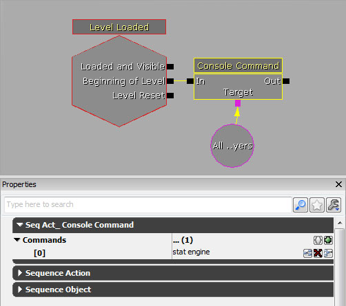
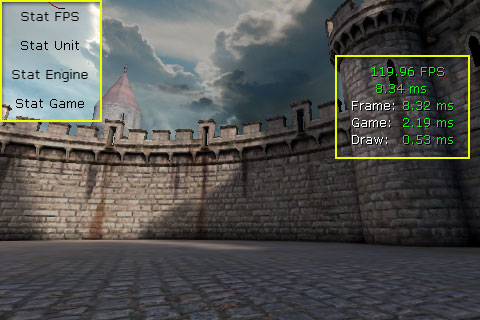

UDN
Search public documentation:
MobileProfilingHome
日本語訳
中国翻译
한국어
Interested in the Unreal Engine?
Visit the Unreal Technology site.
Looking for jobs and company info?
Check out the Epic games site.
Questions about support via UDN?
Contact the UDN Staff
中国翻译
한국어
Interested in the Unreal Engine?
Visit the Unreal Technology site.
Looking for jobs and company info?
Check out the Epic games site.
Questions about support via UDN?
Contact the UDN Staff
UE3 Home > Performance, Profiling, and Optimization > Profiling for Mobile Devices
UE3 Home > Mobile Home > Profiling for Mobile Devices
UE3 Home > Mobile Home > Profiling for Mobile Devices
Profiling for Mobile Devices
Overview
STAT Commands
Executing Commands
There is no console on mobile games so there is no means to arbritrarily execute commands through keyboard entry. Some methods of executing commands are:- Kismet - Sequences can be set up in Kismet to execute STAT commands using the Console Command action. These sequences can be triggered at the beginning of the level or by specific events. 
- UnrealScript - UnrealScript can be used to execute STAT commands by calling the
ConsoleCommand()function on thePlayerControllerand passing it the command to execute. This gives great flexibility, but obviously requires changing code and recompiling to call different commands. - Menu Buttons - A debug menu can be created using the Mobile Menu System, where each button in the menu executes a different command through UnrealScript using the same method described above. 
Limited Screenspace
Keep in mind that the STAT commands display the statistical information directly on the screen. This means it may be possible that only a portion of the stats for any one command may be visible. It also makes displaying multiple groups of stats simultaneously virtually impossible. Of course, you can always use these commands when running the game in the Mobile Previewer which will allow you to see the full set of stats. Just be aware that certain aspects may perform differently in the Mobile Previewer than on the actual device.Game Thread Profiling
Retrieving Profiling Files
When running on a mobile device, the profiling files are created on the device itself. In order to use those files, they need to be recovered from the device. The process for doing so is detailed below. How to Get Files from iPhone via the Unreal iPhone Packager tool:- Open IPP.exe in
/binaries/iPhone/ - In the Deployment Tools tab, select the device and click Backup Documents
- Navigate to the IPA that you used on device. For example, if you cooked Release MobileGame, the IPA would be:
\Binaries\IPhone\Release-iphoneos\MobileGam\MobileGame.ipa. - The files will be saved to
\UnrealEngine3\MobileGame\iOS_Backups\ - You can then open up any profiling files via the associated application, such as GameplayProfiler.exe.
Instruments
- Select Memory Monitor and Activity Monitor from the iPhone section of the LIbrary.
- Select the iOS device running the game and All Processes from the dropdown by the Record button.
- Click the Record button to begin profiling.
Memory Profiler
Common Performance Issues
- Using gamma correction on mobile devices can cause a serious impact on performance. It is only meant for use on powerful and future mobile devices (iPad 2 and better). If you have enabled gamma correction on mobile devices for your maps and are noticing performance issues, it may be necessary to disable it and address the lack of gamma correction through content. See Gamma for information on designing content for non-gamma corrected mobile devices.